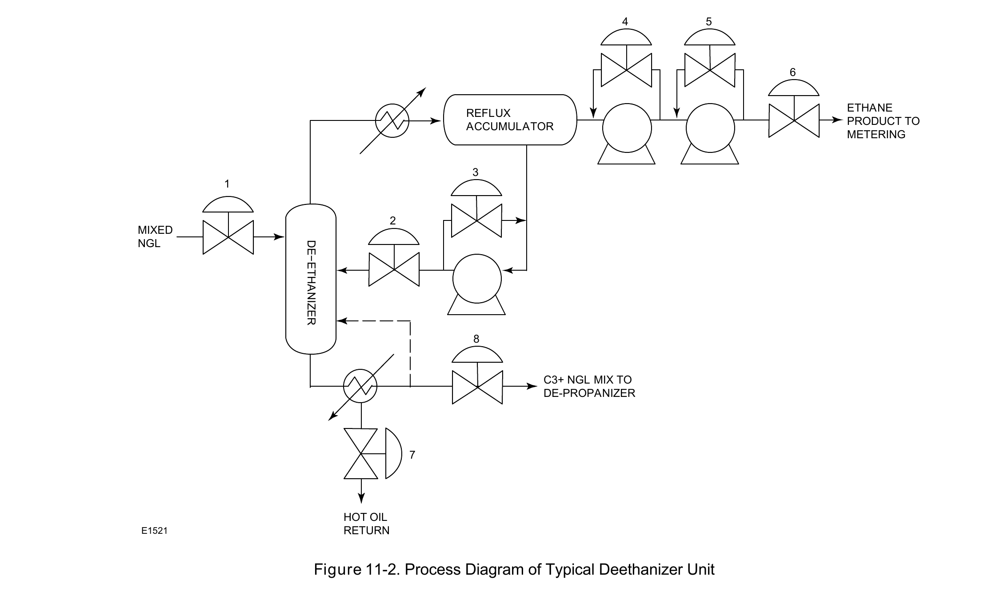

Distillation-Column Control

The deethanizer's own numbered valve stations: feed enters at station 1; overhead ethane vapor recycles through the reflux loop (stations 2, 3) after two reflux pumps (4, 5) split flow to product metering (6); the bottom reboiler runs on hot-oil duty (station 7) and hands the remaining liquid to the depropanizer (8). Reflux and reboiler duty exist to hold the column's separation stable, not just to move product downstream.
Fisher Control Valve Sourcebook — Oil & Gas (© 2013 Fisher), Chapter 11 "Fractionation," Figure 11-2 (drawing number E1521, printed p. 11-3) — "Figure 11-2. Process Diagram of Typical Deethanizer Unit." — used directly. Component Index: ogas-cmp-deethanizer-process-diagram.